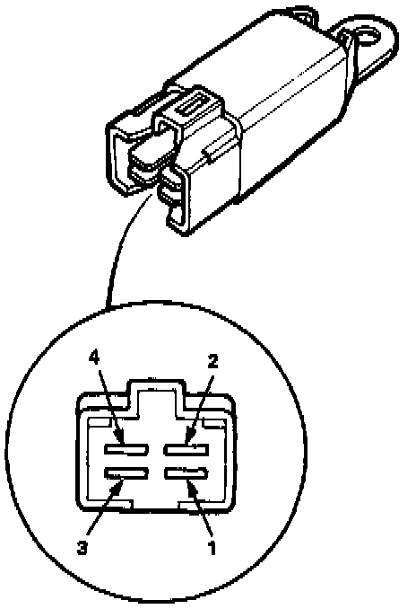
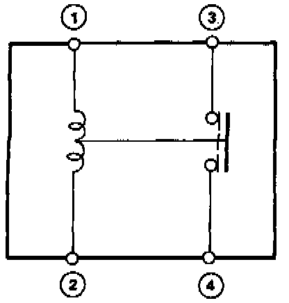

Blower Motor Relay: Testing and Inspection

BLOWER RELAY and BLOWER HI RELAY TEST
1. Check for continuity between terminals 3 and 4. There should be no continuity.
2. Connect a 12V battery across terminals 1 and 2. There should be continuity between terminals 3 and 4.

Circuit Diagram